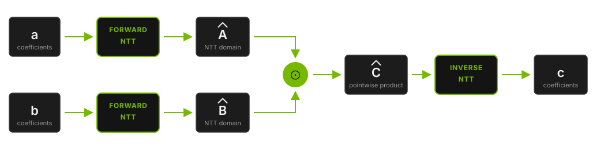

GPU-Accelerated Big Integer Arithmetic and Number Theoretic Transform for Cryptography in NVIDIA cuPQC 0.6
We're excited to announce cuPQC 0.6, delivering Big Integer Arithmetic (BigInt) and the Number Theoretic Transform (NTT) as foundational math layer primitives specifically built for cryptographic application developers working on NVIDIA GPUs. These libraries are engineered to power the entire cryptographic spectrum, from classical protocols and post-quantum cryptography (PQC) to the massive computational workloads at the core of Zero-Knowledge Proofs (ZKPs) and Fully Homomorphic Encryption (FHE).
What's New in 0.6
Whether you are scaling traditional public-key cryptography like RSA and ECC, implementing post-quantum schemes, or bringing advanced privacy-preserving technologies like ZKPs and FHE to production, you face the same bottleneck: executing millions of multi-precision integer operations and polynomial multiplications at high throughput. Historically, accelerating these workloads on GPUs meant implementing and optimizing custom CUDA kernels from scratch for every specific ring dimension, bit width, and parameter set your schemes require.
cuPQC 0.6 eliminates this barrier by providing that arithmetic through the cuPQC-BigInt and cuPQC-NTT libraries as ready-to-use GPU primitives. You can now compose complex cryptographic protocols using accelerated multi-precision integer arithmetic and polynomial multiplication as standard building blocks.
These libraries are designed as device extensions, enabling you to fuse these arithmetic operations with your own specialized functions into a single kernel. This avoids unnecessary host-device data transfers and intermediate memory allocations, a critical requirement for applications like ZKP proving, FHE ciphertext evaluation, and large-scale public-key infrastructure. Batch-oriented APIs enable thousands of concurrent operations to execute in parallel, letting you build faster, more scalable cryptographic solutions while focusing on your protocol design rather than arithmetic implementation.
This release adds:
- cuPQC-BigInt: Provides fixed-width unsigned integers with full arithmetic up to 4096 bits and storage up to 8192 bits, with thread and warp execution models, Barrett and Montgomery reduction paths, and compile-time error-handling policies. It serves as the workhorse for classical cryptography, the classical halves of hybrid PQC protocols, and large-field ZKP arithmetic.
- cuPQC-NTT: Provides cyclic forward and inverse transforms in the Montgomery domain, in both standard and staged execution modes, for transform lengths up to 224 points over a user-selected prime up to 62 bits. This provides the exact heavy lifting required for the massive polynomial rings used in FHE and ZKP systems.
In our benchmarks, cuPQC-NTT runs 32-bit transforms 12× to 42× faster than a 28-core CPU across sizes from 28 to 224 points, and cuPQC-BigInt runs 34× to 773× faster than a single CPU core running GMP across the eight operations we measured.
These additions expand the cuPQC SDK into four libraries across two tiers. At the math layer, cuPQC-BigInt and cuPQC-NTT provide low-level arithmetic, while cuPQC-Hash delivers key ZKP primitives like Poseidon2 and Merkle trees. Together, they give developers full flexibility to either deploy ready-to-use algorithms or construct custom, high-performance cryptographic pipelines on GPUs.
The following sections walk through each library in detail, covering supported operations, key configuration parameters, and benchmark results.
cuPQC-BigInt: Multi-Precision Integer Arithmetic
Modern cryptographic algorithms work with numbers that are orders of magnitude larger than what standard processor types can handle natively. Zero-Knowledge Proofs operate over 256- to 384-bit scalar fields, ECC works over 256- to 512-bit prime fields, post-quantum isogeny schemes use primes in the 400- to 700-bit range, and traditional RSA keys span up to 4096 bits. In implementations, these values are held in multi-precision representations, with modular arithmetic applied at full width throughout the protocol. When thousands of these operations must run concurrently at high throughput, carrying the load on CPUs alone quickly becomes an expensive bottleneck.
cuPQC-BigInt provides these values as fixed-width unsigned integers built from 32-bit little-endian limbs. Widths are multiples of 32. Full arithmetic is available up to 4096 bits, and the double-width type used for products stores up to 8192 bits. This single library covers standard key sizes, elliptic curve fields, and large ZKP proof-system fields without requiring a separate implementation for each. The specific widths you can instantiate depend on how many threads cooperate on a single integer, as detailed in Table 2. Just like the native integer types they extend, arithmetic wraps modulo 2bit_width.
A full product of two N-bit values is up to 2N bits, so mul_wide and square return a separate double-width type carrying twice the limbs, complete with lo and hi accessors for its halves. At the 4096-bit arithmetic limit that product is 8192 bits. That wide value is also what Barrett and Montgomery reductions take as input to reduce it back to a single width. When you only need part of a product, mul_low and mul_high return a single width directly, and mul_low costs roughly half as much as a full wide multiply.
Operations
The table below is a high-level view of the functions and operators. Overloads, execution-model restrictions, and full signatures are in Supported Operations in the cuPQC-BigInt Features guide.
cuPQC-BigInt Operations
name() = callable · + = operator
-
01Construction and access
Build a value from scalars or limbs, read parts of it back, and write it to global memory.
bigint()from a 32- or 64-bit scalar, or a limb arraystore()whole value, or one instance of a batchto_uint32()to_uint64()low bits of the value[]one limb, least significant first; thread execution only -
02Addition and subtraction
Bigint and scalar operands; results wrap at the declared bit width.
add_scalar()sub_scalar()+-+=-= -
03Multiplication
Low, high, and full products, and squares.
mul_low()mul_high()mul_scalar()*=single width, wraps at the declared bit widthmul_wide()square()*double-width result, withloandhihalves -
04Division and remainder
Quotient and remainder, including from a double-width value.
div_rem()returns a status; also on the double-width typemod()/%failures follow the on-error policy -
05Comparison
Ordering against another instance or a scalar.
compare()three-way, against an instance or a scalar==!=<<=>>= -
06Bitwise and shifts
Bit-level logic, shifts, and leading-zero count.
&|^~&=|=^=<<>><<=>>=clz()leading zeros over the full width -
07Modular arithmetic
Arithmetic under an arbitrary modulus.
add_mod()sub_mod()mul_mod()pow_mod()scalar or big-integer exponentinv_mod()odd and even moduli -
08Barrett reduction
Precompute once against a fixed modulus, then reduce cheaply.
setup_barrett()precompute against a fixed modulusreduce_barrett()reduce double-width values -
09Montgomery arithmetic
Enter the Montgomery domain, multiply, and come back.
to_montgomery()mul_montgomery()from_montgomery()reduce_montgomery()on double-width values
Table 1. Device-side operations on the bigint and bigint_wide types
Execution Models
The design decision that most affects performance is how a single integer maps onto CUDA threads. cuPQC-BigInt offers two execution models to balance latency and throughput:
Thread Execution (Thread()): Maps one integer to one thread. This provides maximum throughput when you have many independent values of moderate width. It is the ideal choice for batched elliptic-curve point arithmetic or ZKP field operations (such as BN254 or BLS12-381) running thousands of 256-bit operations side by side.
Warp Execution (Warp()): Splits one integer across multiple consecutive lanes, with carry propagation crossing lanes via warp intrinsics. You select this alongside a TPI<N>() parameter, where N is a power of two between 1 and 32. This model drastically reduces latency for massive integers. For example, a 3072-bit modular exponentiation spans 96 limbs; distributing it across 16 lanes shortens the dependent carry chain by a factor of 16.
Under warp execution, several instances can share a warp. TPI<8> packs four independent 8-lane instances into one 32-lane warp. Raising or lowering TPI trades per-integer latency against how many integers that warp computes, without rewriting the kernel.
The lane count also dictates which bit widths you can build, as each lane requires enough limbs to justify its place in the warp.
cuPQC-BigInt Supported Widths
Every column past the first also takes Warp()
1 lane
Thread()32 · 64 · 128256-10242 lanes
TPI<2>()128-20484 lanes
TPI<4>()256-40968 lanes
TPI<8>()512-409616 lanes
TPI<16>()1024-409632 lanes
TPI<32>()2048-4096Table 2. Arithmetic bit widths built for each lane count
Every width inside a range is supported. For instance, 1184 bits across four lanes is a valid configuration. The compiler enforces two simple rules for these ranges: a warp configuration requires at least two limbs per lane, and maxes out at either 32 limbs per lane or 128 limbs total. Single-lane execution is the exception at the low end (32, 64, and 128 bits are valid, while 96, 160, 192, and 224 are not). Requesting a width outside these supported sets will satisfy the type system but fail to link.
#include <bigint.hpp>
using namespace cupqc;
// One 1024-bit integer per thread.
using BI1024 = decltype(BitWidth<1024>() + SM<800>() + Thread());
// One 3072-bit integer per 8 lanes; 4 instances per warp.
using BI3072 = decltype(BitWidth<3072>() + SM<800>() + Warp() + TPI<8>());
__global__ void square_and_store(const uint32_t* in, uint32_t* out)
{
unsigned i = blockIdx.x * blockDim.x + threadIdx.x;
BI1024::bigint a(in, i); // load by instance index
auto wide = a.square(); // double-width result
wide.lo.store(out, i); // store by instance index
}
Modular Reduction Paths
Modular reduction is typically the heaviest computational step in any cryptographic protocol. There is no universal best algorithm for this step; the most efficient approach depends entirely on whether your protocol uses a modulus once or repeatedly in a loop. To maximize throughput, cuPQC-BigInt avoids a one-size-fits-all approach. Instead, it provides multiple explicit reduction paths, giving you the control to select the exact algorithm that fits your workload.
cuPQC-BigInt Modular Reduction Paths
name() = callable · % = operator
-
01Add / subtract
(a ± b) mod m
add_mod()sub_mod()Direct conditional reduction; no division. Requires a < m and b < m.
-
02General remainder
a mod m
mod()div_rem()%Uses the division core; no precomputation. Prefer
div_rem()when you need a status code or quotient. -
03General modular multiplication
(a · b) mod m
mul_mod()Full wide multiply followed by division-based remainder; no precomputation.
-
04Repeated wide reduction
same m
setup_barrett()reduce_barrett()Precompute once, then reduce multiple wide values (for example
mul_wide()/square()results). -
05Repeated multiplication
same odd m
to_montgomery()mul_montgomery()from_montgomery()reduce_montgomery()Convert once and remain in Montgomery form across the operation chain.
-
06Exponentiate
ae mod m
pow_mod()Odd m uses Montgomery internally; even m uses
mul_mod(). Not intended as a constant-time path for secret exponents.
Table 3. The reduction path to pick for each pattern of modulus reuse
To choose the right path, follow these general rules:
- Single Reductions: For a one-off operation,
modandmul_modwin outright because they require no setup. - Repeated Modulus (Loops): For operations against a fixed modulus, Barrett and Montgomery amortize their precomputation cost within a handful of iterations.
Barrett precomputes a reciprocal with setup_barrett, then reduce_barrett takes a double-width value. Setup runs once per modulus; approx and den_clz are opaque state you pass through unchanged. The wide numerator must satisfy num.hi < den, which holds for a product when both factors are already reduced.
using BI2048 = decltype(BitWidth<2048>() + SM<800>() + Thread());
__global__ void barrett_reduce_wide(const uint32_t* wide_in, uint32_t* out, const uint32_t* m)
{
unsigned i = blockIdx.x * blockDim.x + threadIdx.x;
BI2048::bigint den(m);
BI2048::bigint approx;
int den_clz;
BI2048::bigint::setup_barrett(den, approx, den_clz); // once per modulus
BI2048::bigint_wide num(wide_in, i);
BI2048::bigint rem;
BI2048::bigint::reduce_barrett(rem, num, den, approx, den_clz);
rem.store(out, i);
}
Montgomery uses the descriptor's modulus type, a montgomery_modulus specialized for your width, which computes the REDC constant m′ = −M−1 mod 232 once and carries it through the whole chain.
By converting at the start and returning at the end, a Montgomery loop stays in that domain:
using BI2048 = decltype(BitWidth<2048>() + SM<800>() + Thread());
__global__ void mont_chain(const uint32_t* in, uint32_t* out, const uint32_t* m)
{
unsigned i = blockIdx.x * blockDim.x + threadIdx.x;
BI2048::modulus mm(m); // precompute m' once
auto a = BI2048::bigint(in, i).to_montgomery(mm);
auto acc = a;
for (int k = 0; k < 16; ++k)
acc = acc.mul_montgomery(a, mm); // stays in Montgomery form
acc.from_montgomery(mm).store(out, i);
}
Compile-Time Error Handling
Runtime conditions like division by zero, a non-invertible modular inverse, or a violated Barrett invariant present a unique challenge on the GPU, where kernels cannot simply throw exceptions. Only div_rem and inv_mod return a bigint_error enumerator; the rest, including /, %, mod, add_mod, mul_mod, and pow_mod, have no return channel for error codes.
cuPQC-BigInt bridges this gap by embedding an error-handling policy directly into the compile-time type descriptor. Because the policy is a template parameter, you can debug aggressively during development and then ship to production with zero runtime performance penalty.
Three policies are available:
OnErrorNone(default): Takes no action. The result is unspecified and the kernel continues, so the caller inspects the returned status where one exists.OnErrorTrap: Calls__trap()on the offending thread to halt the kernel immediately, without printing a message.OnErrorPrintTrap: Prints the failing block and thread indices along with the specific error, then traps. Best kept to debugging, sinceprintffrom a kernel is expensive.
Both trapping policies require thread execution (Thread()). Warp instances (Warp()) use OnErrorNone only. Failures on operations that return void are silent; inv_mod is the warp-available call that still returns a status.
Writing Kernels
A core advantage of cuPQC is the ability to fuse large-integer arithmetic directly into your own CUDA kernels. This keeps your data in registers or shared memory and avoids costly round trips to the host.
Basic integer arithmetic. By composing a bit width (BitWidth), an architecture target (SM), and an execution model (Thread or Warp), you generate a highly optimized bigint type. Once this type is defined, you can perform multi-precision addition, subtraction, and other operations directly in your kernel using familiar C++ operators.
// 1024-bit integers, with four threads cooperating on each integer.
using BI1024 = decltype(BitWidth<1024>() + SM<800>() + TPI<4>() + Warp());
__global__ void add_kernel(uint32_t* sums,
const uint32_t* global_buf_a,
const uint32_t* global_buf_b,
unsigned int count)
{
const unsigned int thread_id = blockIdx.x * blockDim.x + threadIdx.x;
// each group of 4 threads owns one 1024-bit integer
const unsigned int bigint_index = thread_id / BI1024::tpi;
if (bigint_index >= count) {
return;
}
// The indexed constructor reads the integer from the packed limb buffer
const BI1024::bigint a(global_buf_a, bigint_index);
const BI1024::bigint b(global_buf_b, bigint_index);
// 1024-bit integer addition (wraps on overflow)
const auto c = a + b;
// store the result in the packed output limb buffer
c.store(sums, bigint_index);
}
Constructors and store() both accept an instance index, so an array of independent integers loads and stores by batch position without manual stride arithmetic.
Modular arithmetic. When working over finite fields, you need arithmetic that respects your prime bounds. Operations like add_mod and pow_mod support an additional modulus argument to handle this constraint automatically.
__global__ void basic_pow_mod_kernel(uint32_t* out, const uint32_t* base, const uint32_t* exp, const uint32_t* p, int n_batch)
{
int idx = blockIdx.x * blockDim.x + threadIdx.x;
if (idx < n_batch)
{
using BI = decltype(BitWidth<1024>()
+ SM<800>()
+ Thread());
typename BI::bigint bv(base, idx), ev(exp, idx), pv(p, idx);
// cv = (bv ** ev) mod pv
auto cv = bv.pow_mod(ev, pv);
cv.store(out, idx);
}
}
Performance
Test Environment
- CPU: AMD EPYC 7R13 (single core running GMP).
- GPU: NVIDIA L40S.
- Metrics: Throughput in operations per second (mean of 20 samples). Note: Because GMP is single-threaded and lacks a batch API, a single CPU core serves as the baseline.
Operations 1
THROUGHPUT · OPS / SEC
Add
Multiply
Divide and remainder
Modular multiply
REDUCTION BY DIVISION
BIT WIDTH
Both axes are log scaled. A circled point is the fastest configuration at that width, and the speedup row gives that point's throughput over one CPU core. Add and multiply chain 32 operations per operand.
Operations 2
THROUGHPUT · OPS / SEC
Modular multiply
BARRETT REDUCTION
Modular inverse
Modular exponentiation
EXPONENT 65537
Modular exponentiation
FULL-WIDTH EXPONENT
BIT WIDTH
Same axes as above. GMP has no Barrett API, so that panel compares against its modular multiply, and Barrett setup runs once outside the timed region.
- Addition: One thread per integer is fastest at 256 and 512 bits (96.6 Gop/s at 256 bits). From 1024 bits up, more than one lane per integer wins.
- Multiplication: Throughput falls as width grows, from 45.3 Gop/s at 256 bits down to 300 Mop/s at 4096 bits, while the GPU still holds a consistent lead over the CPU of 400x to 773x.
- Division and Remainder: As the most expensive basic operation,
div_remproduces a quotient and remainder simultaneously. It runs at roughly a twelfth to a twentieth of the multiplication rate at every width. - Modular Multiplication: Without precomputation,
mul_modreduces via division. Its throughput closely mirrorsdiv_rem(2.59 Gop/s at 256 bits and 21.2 Mop/s at 4096 bits). - Barrett Reduction: For widths of 1024 bits and above, the Barrett path runs 2.6x to 2.9x faster than reducing by standard division. At 256 bits, it is 18% slower. If you are doing one-off reductions at small widths, stick to standard
mul_mod. - Modular Inversion:
inv_modruns an extended Euclidean loop, meaning iteration counts depend on the actual values rather than just the width. A single inversion costs roughly 1.5 times a modular multiplication. Because data-dependent loops force warp lanes to execute in lockstep, this narrows the GPU's lead over the CPU to 317x at 256 bits and 34x at 2048 bits. - Modular Exponentiation: Exponent size dictates the cost as heavily as bit width. Using the standard RSA public exponent (65537), the GPU achieves 1.14 Gop/s at 256 bits and 4.19 Mop/s at 4096 bits. Switching to a full-width private-key exponent, those same widths yield 63.2 Mop/s and 17.9 kop/s. Across both modes and all ranges, the GPU maintains a lead of at least 232x over a single CPU core.
cuPQC-NTT: Number Theoretic Transform
Modern cryptographic schemes based on polynomial rings work with polynomials modulo a prime (or prime power) and modulo a polynomial that defines the ring structure. While these constructions span post-quantum key exchange and signatures, they are the absolute computational core of zero-knowledge proof systems (ZKPs) and fully homomorphic encryption (FHE).
The primary bottleneck in these systems is polynomial multiplication at scale. When multiplying polynomials of degree n using traditional schoolbook methods, the O(n2) complexity quickly becomes prohibitive for large field sizes.
The Number Theoretic Transform (NTT) solves this using the same principle as the Fast Fourier Transform (FFT), but over finite fields. By applying a forward transform to move coefficient vectors into a domain where convolution becomes simple pointwise multiplication, and then applying an inverse transform to return to coefficient representation, the computational cost drops to O(n log n).
cuPQC-NTT brings this massive optimization pipeline directly to the GPU. It provides primitives for twiddle generation, batched forward and inverse transforms, and pointwise operations that keep your data entirely on the device. The library implements the cyclic transform for arithmetic in the ring modulo xN − 1. Because transforms run natively in the Montgomery domain, with conversion happening strictly at the load and store boundaries, you can execute long chains of transforms and pointwise operations without ever taking a round trip through the normal domain.
Operations
The table below is a high-level view of the device functions. Parameters, overloads, and calling conventions are in the cuPQC-NTT Device Functions reference.
cuPQC-NTT Operations
name() = callable
-
01Twiddle and table setup
Build roots of unity once, convert the tables to Montgomery form, and reuse them across a batch.
make_twiddles()one table per direction, forward and inversetransform_twiddles_to_mont()convert once, then reuse -
02Forward NTT
Transform coefficient-domain vectors into the NTT domain.
execute()standard, single kernelstage_1_execute()stage_2_execute()staged, two passes -
03Inverse NTT
Transform NTT-domain vectors back to coefficient representation.
execute()standard, with Ninvstage_1_execute()stage_2_execute()staged, two passes -
04Pointwise operations
Element-wise arithmetic on equal-length vectors in the NTT domain. Both operands must already be in Montgomery form.
add()sub()mul() -
05Domain conversion
Convert at the load and store boundary so the transform chain stays in Montgomery form.
load_to_mont()store_from_mont()convert at the boundaryload()store()no conversion; data is already in Montgomery formto_mont()from_mont()scalar conversion
Table 4. Device-side operations on an NTT descriptor
Transform Modes
The transform length N must be a power of two (N = 2d). Standard mode is a single kernel with the full working set in shared memory; staged mode is two kernel passes for lengths that do not fit. Which N each mode builds, and for which element type, is in Table 5.
- Standard Transforms: Runs the complete N-point computation in a single kernel launch, with the full working set resident in shared memory. When N is in that single-kernel range, this avoids the extra launch and the strided pass.
- Staged Transforms: Handles the massive sizes that exceed shared memory limits. You explicitly choose a sub-transform size using
SubSize<M>, which yields K = N/M. The transform then executes in two kernel passes: first, M parallel K-point contiguous transforms; second, K parallel M-point strided transforms. Because each pass holds only max(K, M) elements per block, staged transforms are what make massive 224-point operations possible.
Note: SubSize is a critical performance tuning knob. Modifying it can swing the performance of a 220 transform by roughly 20% across its valid values.
Primes and Sizes
cuPQC-NTT Primes and Sizes
-
01Prime modulus
A runtime value you pass in, not a compile-time field type.
any primep < 262
-
02Root of unity
A primitive Nth root modulo p, passed in as g when the twiddle table is built.
make_twiddles()one table per direction and N
-
03Element type
Storage width for coefficients and the modulus, in either transform mode.
uint16_tuint32_tuint64_tp must fit the chosen width
-
04Standard sizes
One kernel launch; the element type caps how far N goes.
uint16_t22 ≤ N ≤ 214
uint32_tuint64_t22 ≤ N ≤ 213
-
05Staged sizes
Two kernel passes; the legal
SubSizevalues narrow as N grows.2565121024204840968192214 ≤ N ≤ 221
5121024204840968192N = 222
1024204840968192N = 223
204840968192N = 224
Table 5. Element types, prime bound, and legal transform sizes for each mode
You must supply the prime modulus and a matching primitive root to the setup functions. The mathematical constraint is straightforward: an N-point transform exists only when N divides p − 1.
Writing Kernels
In coefficient form, the product c of polynomials a and b requires a standard convolution: two forward transforms, a pointwise multiplication, and one inverse transform.
A = fwd-NTT(a), B = fwd-NTT(b), C = A ⊙ B, c = inv-NTT(C)
(where ⊙ is pointwise multiplication on equal-length vectors in the NTT domain, in Montgomery form)

With cuPQC-NTT, this entire pipeline runs as a single kernel in this example. Intermediate transforms never leave shared memory. The only global memory traffic is the initial load at the start and the final store at the end, drastically reducing memory bandwidth bottlenecks. The twiddle tables, Montgomery constants, and N−1 are built once outside this kernel and reused for the batch.
using namespace cupqc;
using NTT = decltype(Algorithm<algorithm::NTT>() + Direction<nttDirection::FORWARD>()
+ Precision<uint32_t>() + Size<1024>() + Block() + BlockDim<128>());
using INTT = decltype(Algorithm<algorithm::NTT>() + Direction<nttDirection::INVERSE>()
+ Precision<uint32_t>() + Size<1024>() + Block() + BlockDim<128>());
// c = inv-NTT( fwd-NTT(a) ⊙ fwd-NTT(b) ), one block per polynomial
__global__ void convolution(uint32_t* c, const uint32_t* a, const uint32_t* b,
const uint32_t* twiddles, const uint32_t* inv_twiddles,
const nttConst<uint32_t> ntt_const, const uint32_t N_inv)
{
constexpr uint32_t N = NTT::Size;
__shared__ uint32_t a_hat[N];
__shared__ uint32_t b_hat[N];
NTT().load_to_mont(a_hat, a + blockIdx.x * N, ntt_const);
NTT().load_to_mont(b_hat, b + blockIdx.x * N, ntt_const);
__syncthreads();
NTT().execute(a_hat, twiddles, ntt_const.p); // A_hat
NTT().execute(b_hat, twiddles, ntt_const.p); // B_hat
__syncthreads();
NTT().mul(a_hat, b_hat, ntt_const.p); // C_hat = A_hat ⊙ B_hat
__syncthreads();
INTT().execute(a_hat, inv_twiddles, ntt_const.p, N_inv);
__syncthreads();
INTT().store_from_mont(a_hat, c + blockIdx.x * N, ntt_const);
}
Performance
Test Environment
- CPU Baseline: Intel Xeon Gold 5512U (28 cores, 56 logical CPUs).
- GPU: NVIDIA RTX 6000 Ada Generation.
- Metrics: Wall time in seconds (measuring the fastest run rather than a mean).
- Batching: Single-kernel sizes through 212 use batch 100. Staged sizes from 214 use batch 1. On the time chart, CPU uses the same batch at each N.
- NT: Threads per block, set with
BlockDim. These runs use 128, 256, 512, and 1024. Each GPU time point is the fastest measured configuration at that N: minimum over NT, and overSubSizefor staged.
32-bit NTT Time
Wall time versus transform size for 32-bit coefficients; lower is faster. The break between 212 and 214 is the switch from a single kernel at batch 100 to staged transforms at batch 1, which is why the CPU times drop even though N increased. The GPU is fastest at every size. On the small single-kernel points, the 28-core CPU is slower than one core: there is not enough work to amortize the parallel launch.
CPU VS GPU
32-bit NTT
TIME · SECONDS, LOG SCALE
GPU points use the fastest NT, and SubSize for staged, at each N.
The same 32-bit comparison as a multiple, from 28. Each pair of columns is GPU versus the 28-core CPU and versus one core. The chips under a size are the GPU NT, and SubSize for staged, for that bar. Single-kernel columns use the batch among 1, 10, and 100 with the largest 28-core speedup (batch 100 on every size shown); staged columns stay at batch 1.
VS CPU
32-bit NTT
SPEEDUP · TIMES FASTER
64-bit NTT Time
Same wall-time axes as the 32-bit chart, GPU only, one line per NT. A staged point is the fastest SubSize for that NT, not the global winner. On the staged side the lines sit within a few percent of each other; the dashes are only so you can tell them apart.
BY NT
64-bit NTT
TIME · SECONDS, LOG SCALE
Use the grid to choose NT from transform size. The circled cell is the fastest NT at that N; every other cell is the penalty for a different choice.
NT BY SIZE
64-bit NTT
PENALTY · % SLOWER THAN FASTEST NT
- Through 212: NT 256 is fastest at every measured single-kernel size. NT 128 is the miss, up to 44% slower at 212.
- Staged sizes: The fastest NT depends on N; use the circled cell. NT 1024 is never the fastest pick and costs up to 56% at 218.
- 222 and above: Any of the four NTs is within 10% of the fastest.
32-bit vs 64-bit NTT Time
Same GPU wall-time series, 32-bit and 64-bit coefficients on one plot. Each point is the fastest NT, and SubSize for staged, at that N. The 64-bit line is slower at every size, from 1.1× at 27 to 1.9× at 224.
32 VS 64
GPU NTT
TIME · SECONDS, LOG SCALE
BigInt and NTT Takeaways
Four configuration choices account for the largest swings in the results above:
- cuPQC-BigInt execution model:
Thread()with TPI 1 delivers the highest throughput at 256 and 512 bits. At 1024 bits and above,Warp()takes the lead. - cuPQC-BigInt Barrett reduction: At 1024 bits and above, Barrett reduction achieves 2.6× to 2.9× the throughput of reduction by division. At 256 bits the precomputation does not pay for itself, and
mul_modremains the better choice. - cuPQC-NTT threads per block: The optimal NT varies with N. On 64-bit staged transforms, NT 1024 carries a penalty of up to 56% at 218.
- cuPQC-NTT
SubSize: On staged transforms, the choice ofSubSizeshifts the runtime of a 220 transform by roughly 20% across its valid values.
Applications Across Cryptography
The 0.6 math layer is deliberately general. The same two libraries underpin workloads across several cryptographic domains.
Zero-Knowledge Proofs (ZKPs). Modern proof systems are among the primary beneficiaries of cuPQC-NTT. Polynomial commitment schemes, evaluations, and multi-scalar multiplications (MSM) demand massive transform throughput. The 62-bit prime bound covers popular 31-bit fields and other primes under 262. When paired with cuPQC-Hash for Poseidon2 hashing and Merkle tree construction, the entire ZKP proving pipeline remains on the GPU from end to end, eliminating host-device memory bottlenecks.
Fully Homomorphic Encryption (FHE). FHE ciphertexts are large polynomials over high-degree rings, and homomorphic multiplication requires a forward and inverse transform at every step. cuPQC-NTT provides the batched transforms and reusable twiddle tables that this ciphertext arithmetic depends on in BGV, BFV, and CKKS. cuPQC-BigInt covers the multi-precision side of the same pipelines: ciphertext moduli reach hundreds or thousands of bits, and the steps that leave the RNS representation, such as CRT reconstruction and the scaling and rounding around modulus switching, operate on the full-width modulus.
Public-Key and Classical Cryptography. cuPQC-BigInt serves as the core engine for classical protocols, handling up to 4096-bit operations. It accelerates RSA signing and verification, elliptic-curve scalar multiplication, including the classical half of hybrid key exchange during post-quantum migration, verifiable delay functions (VDFs), RSA accumulators, and Paillier-style additively homomorphic encryption. All of these workloads consist of repeated modular exponentiations and multiplications that batch efficiently across CUDA warps.
Post-Quantum Cryptography (PQC). The two dominant families exercise different parts of the math layer. Lattice-based schemes are transform-bound: their runtime is concentrated in polynomial multiplication, which cuPQC-NTT delivers as batched transforms with reusable twiddle tables, across both the standardized parameter sets and the wider designs that research and custom deployments explore. Isogeny-based schemes such as SQIsign and CSIDH are dominated instead by prime-field arithmetic, where cuPQC-BigInt supplies the modular multiplication, inversion, and exponentiation against a fixed field prime, with Montgomery or Barrett reduction amortizing the setup across the whole computation.
Get Started with cuPQC 0.6
cuPQC 0.6 is available now! Download the SDK and start building with BigInt and NTT in your own kernels, using the numbers above to guide your configuration.
- Explore cuPQC: Visit the NVIDIA cuPQC product page to learn more about libraries and features.
- Download cuPQC: Get started immediately with the cuPQC Download Page.
- Code Examples: Access practical implementations, code samples, and integration patterns on the cuPQC GitHub Repository.
- Documentation: Review the cuPQC Documentation for complete API references, detailed tuning guides, and release notes.